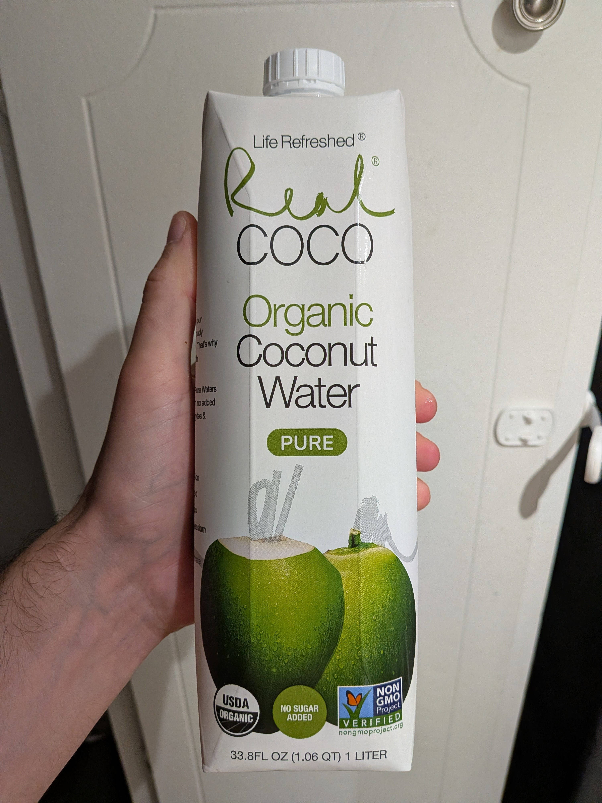

June 2025 · 1 L · Still · Pasteurized · No Added Sugar · USDA Organic
This is a mildly sweet organic Vietnamese water. Single ingredient, so no added sugar. Lots of greenwashing and marketing speak on the package. Non GMO? There is no such thing as a GMO coconut. Vegan? Gluten Free? Kosher? I sure hope so. It gets a silver star for the tetra pak, but the best bottle option is 100% rPET.
Super standard pasteurized taste. Very inoffensive profile with a slightly nutty finish. Almost waterlike consistency. Nothing floral or fresh, which is to be expected from a pasteurized product. Thankfully it is quite refreshing — would be a good pick to bring on a workout.